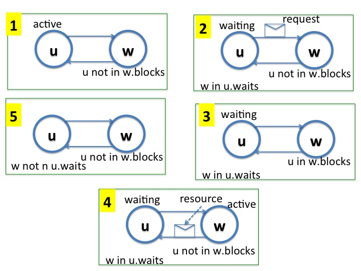
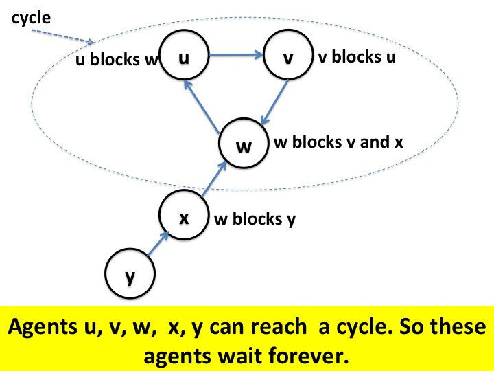

This module shows how consistent cuts of timelines are
used to develop algorithms to detect deadlocks that can arise
in databases.
"Computation is deadlocked" is an example of a stable property; a
deadlocked computation remains deadlocked. A generalization of the
deadlock detection problem is to break a deadlock after it is detected
by aborting or rolling back the computation of some agents; the
generalization is straightforward and we don't discuss it here.
Agents in the system share a set of files.
Each shared file is represented as an
indivisible colored token, with each file having its own
unique color. The system has at most one token of a given color.
Tokens can be sent from agent to agent. Tokens are
not duplicated or destroyed.
An agent \(u\) is in one of the following states:
Executing without holding shared files.
Waiting to acquire a set \(u_{waits}\) of
shared files.
Executing while holding all files in
\(u_{waits}\).

Fig.1 - The Life Cycle of an Agent
An agent executes while holding files for only a finite
time. However, agents may wait forever to acquire files if they
form a deadlock cycle.
Deadlock
A cycle of waiting agents is in a deadlock if each agent is waiting to
acquire a token held by the next agent in the cycle. Our task is to
design an algorithm by which an agent detects if is part of a
deadlocked cycle.
Example
A system has one red, one blue and one green token.
Agents \(x\), \(y\) and \(z\) are deadlocked in the following state.
Agent \(x\) holds the red token and is waiting
to acquire a blue token; agent \(y\) holds the blue token and is waiting
to acquire the green token; and agent \(z\) holds the green token and is waiting
to acquire the red token.

Fig.1 - An Example of a Deadlock
An Algorithm
A general approach to detecting stable properties has two phases
(1) obtain a global snapshot, and (2) analyze the global
snapshot. The
first phase reduces analysis of a dynamic system
into the analysis of static snapshot. The second step
analyzes static date structures such as graphs.
This module describes an algorithm consisting of a single phase
that is an optimization of the two-phase algorithm.
The definition of a deadlocked cycle depends only on the local states
of agents and is independent of the states of message channels.
So, we use a simpler version of the global snapshot algorithm which
does not record states of channels.
Initiating the Algorithm
A waiting agent \(x\) initiates the algorithm by sending a message, called a
marker on each outgoing channel. We call \(x\) the
initiator. Assume that there is only one initiator. (Multiple
initiators can be handled by tagging messages with the identity of the
initiator.)
The marker \(m\)
has a field \(m_{waits}\) that identifies the set
of tokens for which the sender needs to start executing, i.e.,
\(m_{waits} = x_{waits} - x_{holds}\)
where \(x\) is the initiator, and for sets \(S\) and \(S'\), \(S -
S'\) is the set consisting of elements that are in \(S\) and not in \(S'\).
Propagating Markers
When \(y\) receives a marker \(m\), if there is a token common to all
three sets,
\(m_{waits}\), \(y_{holds}\), \(y_{waits}\), then
\(y\) sends a marker \(m'\) on each of its outgoing channels where
\(m'_{waits} = y_{waits} - y_{holds}\) if \(y\) hasn't already sent markers.
So, \(y\) sends markers if it receives a marker and the sender of that
marker is waiting to acquire a token that \(y\) holds and needs, and \(y\) is
waiting to receive additional tokens.
Termination Detection
When the initiator \(x\) receives a marker \(m\), the initiator
detects that it is in a deadlocked cycle if there is a token common to
\(m_{waits}\), \(x_{holds}\), and \(x_{waits}\).
Example
Let's look at the steps of the algorithm for the example given
earlier.
Initiation
Agent \(x\) initiates the algorithm by sending markers
requesting the blue token.
Marker Propagation
When agent \(y\) receives the marker, it
holds the blue token, and it needs the blue token as well as
the green token; so, it sends markers requesting the green token. When
agent \(z\) receives the marker, it
holds the green token, and it needs the green token as well as
the red token; so, it sends markers requesting the green token.
Termination Detection
At the point the initiator \(x\) gets the marker, it holds the red
token, and and it needs the red token as well as
additional tokens; so, it detects termination.
Correctnes of the Algorithm
The algorithm is the global snapshot algorithm, and we
proved the correctness of the algorithm earlier.
Review
Give an example of database deadlock with two agents and two files.
Describe how the algorithm detects deadlock in your example.
How is the algorithm related to the global snapshot algorithm?